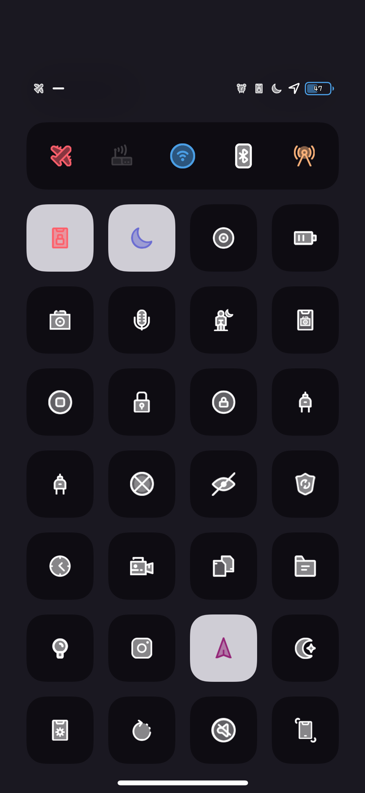

Description
Well, here it is!
Lineal CC for iOS11 and 12. This is designed to work with Lineal UI and Lineal Music Controls to get the full look!
The only CC toggles themed are the ones you can see in the screenshots, and the ones that have a settings icon (mostly. Some tweaks don't have settings icons I can theme). It’s a mix of Apple stock CC toggles and CCModules. Animated toggles such as Lock Orientation, DND, Screen Recorder and LPM cannot be themed. Please do not ask me about them.
This was tested on iPhone XS (12.1.1) and iPhone X (11.3.1). I can’t test other devices so hopefully this looks good on them. I plan for this to theme almost all the CC toggles that CompactionsCC themes, and more if possible.
IMPORTANT! READ THIS!
- The WiFi and Bluetooth icons are themed using BetterCCIconsPro. I've included both files inside the theme folder /Library/Themes/Lineal CC.theme/Bundles/BetterCCIconsPro, so you guys need to move them (just the images, not the entire folder) to /Library/PreferenceBundles/BetterCCIcons.bundle and then enable Glyph mode in the settings. I do not know any other way to theme those two icons, so please don’t ask me about it.
- As of 2019-07-19, if you’re on iOS 11, you can use either Anemone 2.7 or 2.8, or iThemer. If you’re on iOS 12, you can only use iThemer.
As a last note, although this is free, donations are very welcome. I've spent a lot of effort and invested time into this for everyone. I hope it's to your liking!
Screenshots
Click to view screenshots



Changelog
Version 1.1.1
- Fixed sizing issue for @2x devices.
- Added headphones icon for top bar theme.
Version 1.1
- Added tons of new modules. Some of which are: FlipConvert Toggles, CCVPN, LocationService, nocturnal, PowerSelector, BegoneCIA, Blurification, Deluminator and so much more.
- Optional CC top bar theme
Version 1.0
- Release